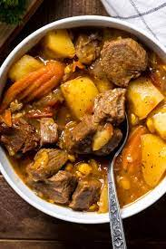

Hobo stew

Description
Mulligan stew, also known as hobo stew, is a type of stew said to have been prepared by American hobos in camps in the early 1900s.
Another variation of mulligan stew is "community stew", a stew put together by several homeless people by combining whatever food they have or can collect.
Community stews are often made at "hobo jungles", or at events designed to help homeless people.
Ingredients
- Ground Beef: You can also use ground chicken or ground turkey.
- Beef broth: I use low-sodium beef broth to help cut back on the salt chicken broth or vegetable broth will also work in a pinch.
- Beef bullion cubes: Really adds maximum flavor.
- Tomato soup: You can also use tomato sauce or tomato juice see my notes in the recipe card for more info.
- Potatoes: I like to use Russet potatoes but red potatoes or Yukon gold are also delicious.
- Diced tomatoes: Fire roasted, or plain both work great.
- Green beans: Fresh or frozen works best. You can use canned just add them during the last part of the cooking time so they don't get mushy.
- Fresh Vegetables: Celery stalks, carrots, green beans, peas, and corn.
Steps
- Heat a large Dutch oven or large pot on medium-high heat and add the olive oil and ground beef cook until brown and drain the fat.
- Add in the carrots, onions, celery, and garlic and cook until soft then add in the flour.
- Add in the beef stock, tomato soup, canned tomatoes, Worcestershire sauce, cajun seasoning, hot sauce and stir.
- Mix in the potatoes green beans, corn, and peas mix and simmer.